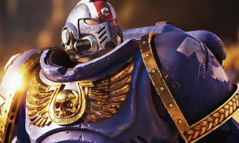

Warhammer 40.000 Space Marine 2 : Du combat gameplay bien énervé, il y a une vibe "Gears Of War"
Depuis décembre dernier et les Game Awards 2022, Warhammer 40.000 Space Marine 2 s'était fait discret. On a bien eu des informations sur la belle édition collector, mais rien de bien concret à se mettre sous la dent. Mais fort heureusement, Focus Entertainment a décidé qu'il était temps de montrer ce que le jeu avait sous la pédale et force est de constater que l'approche plus action de cet épisode devrait séduire un nouveau public, notamment les fans de la série Gears of War.
Parce que oui, on ressent fortement l'influence du AAA d'Epic Games, du temps où Gears of War comptait encore beaucoup pour eux. Caméra à l'épaule proche du personnage, soldat en armure bien massif (normal, c'est du Warhammer) et nuée d'ennemis insectes qu'il va falloir éliminer, on a évidemment l'impression de revivre certains moments du jeu vidéo passé, pour notre plus grand bonheur. Mais en plus de ces séquences de gunfight bien énervées, Warhammer 40.000 Space Marine 2 promet un système de combat au corps-à-corps lui aussi très agressif et efficace, permettant pas mal de mouvements et d'exécutions bien crades. On était déjà assez hype, on est désormais chaud bouillant.
La sortie de Warhammer 40.000 Space Marine 2 est programmée pour 2023, sans plus de précisions, sur PC, PS5 et Xbox Series.
La sortie de Warhammer 40.000 Space Marine 2 est programmée pour 2023, sans plus de précisions, sur PC, PS5 et Xbox Series.

8/10